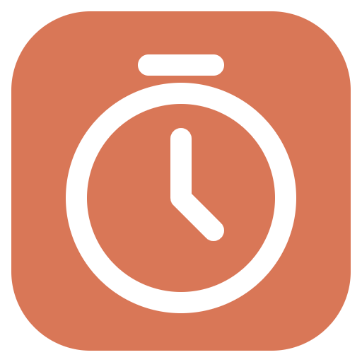

테마
시스템·라이트·다크 중에 고르면 0.4초 동안 부드럽게 바뀌어요. 시스템을 고르면 Windows 설정을 따라가요.

신품타공부할 때 켜 두는 Windows용 뽀모도로 타이머. 창을 내리면 화면 위 작은 팝업으로 남아요.
휴대폰에서는 설치할 수 없어요. PC에서 이 페이지를 열어 주세요.
미니 팝업
공부와 휴식
공부는 5분, 휴식은 1분 단위로. 시간이 끝나면 다음 순서로 바뀐 채 기다려요. 내가 ▶를 누를 때 시작해요.
태그
무엇을 공부했는지 골라 두세요. 자습·프로젝트·수업, 원하는 대로 추가하고 지울 수 있어요.
하루 정리
오늘 언제, 무엇을, 얼마나 공부했는지 한 바퀴에. 지난 날도 넘겨 볼 수 있어요.
기록 확인 · 더 공부하기
끝날 때마다 저장할지 물어봐요. 흐름이 좋으면 ‘저장하고 더 공부하기’ — 추가 시간은 +로 따로 세고, 상한은 없어요.
그 밖의 기능
시스템·라이트·다크 중에 고르면 0.4초 동안 부드럽게 바뀌어요. 시스템을 고르면 Windows 설정을 따라가요.
OLED 화면에서 2분 동안 입력이 없으면 주변을 어둡게 하고 팝업만 남겨요. 번인을 막으려고 팝업이 천천히 둥실 떠다니며 조금씩 자리를 옮겨요.
시작 메뉴와 바탕화면 바로가기로, 작업 표시줄에서도 바로 열어요.
계정 없음 · 광고 없음 · 추적 없음
설치 안내
다운로드 버튼으로 ShinPumTa-Setup.exe를 받아 실행해요. Windows 10·11 64비트용이에요.
개인이 만든 앱이라 아직 코드 서명이 없어서 나오는 안내예요. 이 페이지나 GitHub 릴리스에서 받은 파일인지 확인하고 실행해 주세요.
원하는 폴더를 고르고 설치를 누르면 끝이에요. 시작 메뉴와 바탕화면에 바로가기가 생겨요.
무료예요. 설치하고 ▶만 누르면 돼요.
휴대폰에서는 설치할 수 없어요. PC에서 이 페이지를 열어 주세요.